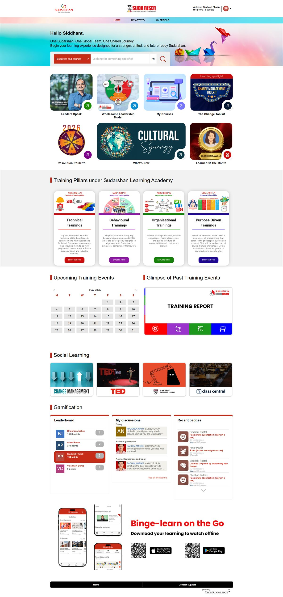
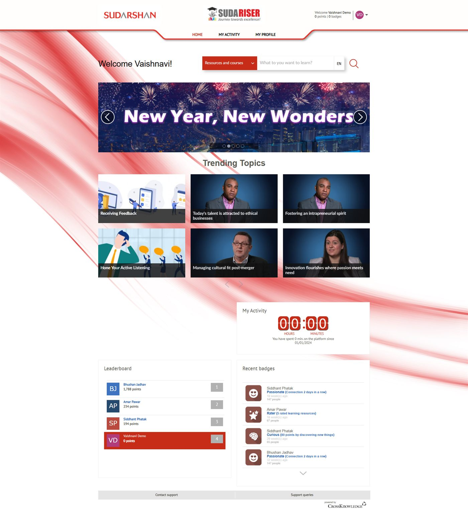

Overview
A refreshed redesign aimed at transforming the learner experience into a more vibrant digital environment.
SudaRiser
A refreshed learning environment designed to feel more active, visual, and engaging.

Before / After

Overview
A refreshed redesign aimed at transforming the learner experience into a more vibrant digital environment.
Challenge
The earlier platform had a traditional layout with limited engagement elements and weaker content presentation.
What Changed
Outcome